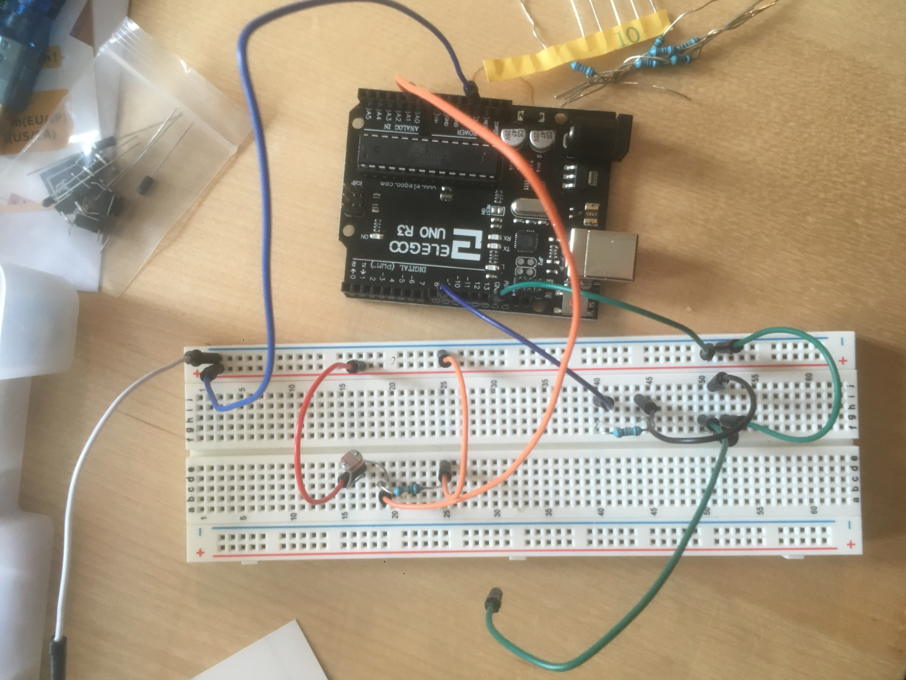

Maike's Assignment 4!
This program uses a transistor to control load power separate from logic power. And it lights up an led strip!

The project uses analogWrite(), a high-load output device, and an input sensor.
Schematic:

Here is all the documentation for assignment 4!
Here is my code:
// these are constants
int inputPin = 0; // Sensor Pin
int ledPin = 9; // LED Pin
void setup() { // setup code, runs once
Serial.begin(9600); // serial communcation
pinMode(ledPin, OUTPUT); // initializing led pin for output
pinMode(inputPin, INPUT); // initializing sensor pin for input
}
void loop() {
// main code here, runs repeatedly:
int lightReading = analogRead(inputPin); // Reads photo. sensor
lightReading = constrain(lightReading, 400, 800); // Checks that the values are within a normal range for mapping
int LEDbright = map(lightReading, 400, 800, 0, 255); // Maps the light sensor values to output values
Serial.print(lightReading); // Serial prints the brightness reading of the light.
analogWrite(ledPin, LEDbright); // turns on the LED
}